Детская экспедиция

Конкурс социальных проектов
"Такая разная чистая вода!"
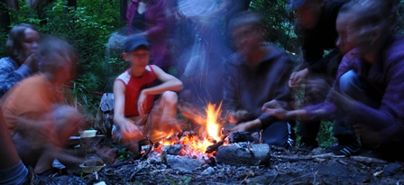
С 15 по 20 августа 2012 года в рамках проекта "Такая разная чистая вода!" состоялась детская экспедиция, проходившая в Славском и Нестеровском районах Калининградской области.
Экспедиция «Такая разная чистая вода!» проводилась в рамках одноимённого проекта, который стал победителем конкурса социальных и культурных проектов OAO «Лукойл» и ООО «Лукойл-КМН» в 2012 году. Партнёрами Калининградского регионального общественного учреждения «Виштынецкий эколого-исторический музей» по проекту являются: МБОУ СОШ «Школа будушего» (пос. Б. Исаково), МБОУ Большаковская СОШ (Славский р-н), МАОУ Залесовская школа, КРОУ «Природное наследие», Калининградский союз «Антропос», Союз Anthropos e.V. - ради детей этого мира (Германия).
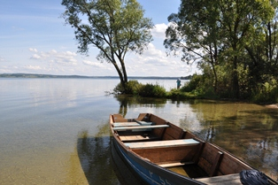
озеро Виштынецкое
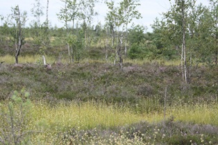
Нижненеманская низменность, Большое Моховое болото
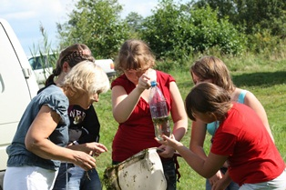
Идея проекта заключается в знакомстве школьников с разнообразием водных объектов и их значением в жизни людей и ландшафта, осмыслении понятия «чистая вода».
На территорий двух ландшафтных районов области - Виштынецкой возвышенности и Нижненеманской низменности, расположенных друг от друга практически на расстоянии сотни километров проводились школьные комплексные экспедиции, во время которых дети познакомились с ценными водными экосистемами: их типами, происхождением, влиянием на облик окружающей местности и значением для людей. Нижненеманская низменность представляет собой плоский равнинный ландшафт дельты реки Неман. Здесь располагаются и знаменитые единственные в России польдерные земли (около 1000 гектар), находящиеся ниже уровня моря, водный режим которых регулируется искуственным путём с помощью системы дамб и водонасосных станций. Совсем иной ландшафт имеет холмистая Виштынецкая возвышенность, сформированная моренными отложениями во время последнего ледникового периода. В межхолмовых понижениях располагается множество небольших озёр и болот. Реки текущие по возвышенности быстрые с каменистым дном, что совершенно отличает их от медленно текущих рек и каналов Нижненеманской низменности. Здесь на виштынецкой возвышенности располагается и самое большое и глубокое озеро Калининградской области - Виштынецкое.
Участникам экспедиции под руководством опытных специалистов предстояло с помощью простых методик выяснялись экологические показатели разных водоёмов, сравнить их между собой. Также учащиеся попытались выяснять отношение населения к данным водным объектам. Специально для этих целей была разработана анкета по которой участники экспедиции проводили опрос местных жителей. Директор "Школы будущего" пос. Большое Исаково Алексей Викторович Голубицкий провёл специальное занятие по песчаным грунтам, открыв детям целый мир минералов, входящих в состав песка. В заключении экспедиции состоялась миниконференция в Виштынецком эколого-историческом музее в посёлке Краснолесье. Участники экспедиции пришли к выводу, что в разных экосистемах вода разная по цвету, запаху, химическим и физическим характеристикам. Но именно эти качества важны для обитателей этих экосистем. В каждой естественной экосистеме своя чистая вода. Такая разная!
Участникам экспедиции под руководством опытных специалистов предстояло с помощью простых методик выяснялись экологические показатели разных водоёмов, сравнить их между собой. Также учащиеся попытались выяснять отношение населения к данным водным объектам. Специально для этих целей была разработана анкета по которой участники экспедиции проводили опрос местных жителей. Директор "Школы будущего" пос. Большое Исаково Алексей Викторович Голубицкий провёл специальное занятие по песчаным грунтам, открыв детям целый мир минералов, входящих в состав песка. В заключении экспедиции состоялась миниконференция в Виштынецком эколого-историческом музее в посёлке Краснолесье. Участники экспедиции пришли к выводу, что в разных экосистемах вода разная по цвету, запаху, химическим и физическим характеристикам. Но именно эти качества важны для обитателей этих экосистем. В каждой естественной экосистеме своя чистая вода. Такая разная!
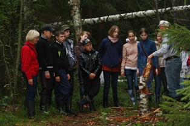
На окраине Большого Мохового болота
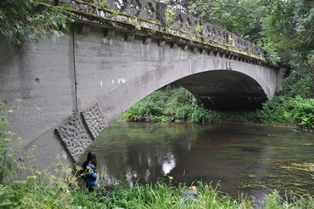
Виштынецкая возвышенность, река Красная
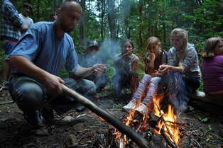
На привале
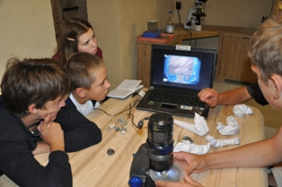
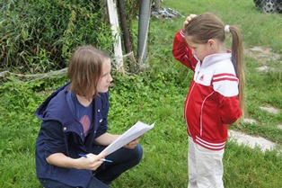
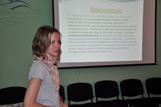
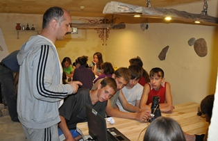
занятие проводит А.В. Голубицкий
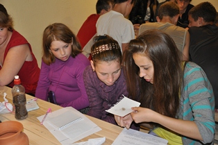
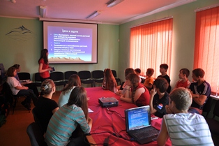
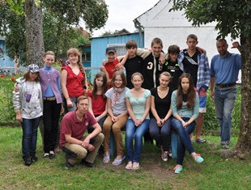

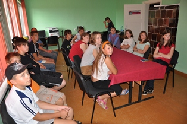

Фото: А. Соколов, Т. Талецкая
15 - 20 августа 2012 г.